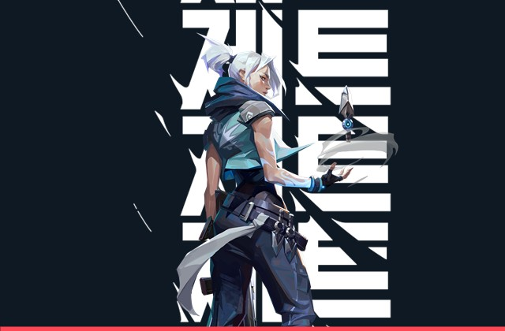

C - Erupção das Brumas (200 Créditos)
Lança instantaneamente um projétil que se expande em uma nuvem de fumaça rápida que bloqueia a visão no impacto. Segure o botão da habilidade para curvar a fumaça na direção da sua mira.
Representando a Coreia do Sul, o estilo de luta ágil e evasivo da Jett permite que ela assuma riscos que nenhum outro agente pode correr.

Lança instantaneamente um projétil que se expande em uma nuvem de fumaça rápida que bloqueia a visão no impacto. Segure o botão da habilidade para curvar a fumaça na direção da sua mira.
Impulsiona a Jett instantaneamente para o alto, permitindo alcançar caixas elevadas e surpreender adversários por cima das paredes.
Ativa os ventos por um breve período. Use novamente a habilidade para se lançar rapidamente na direção em que está se movendo e escapar de trocas de tiro perigosas.
Equipa um conjunto de facas arremessáveis de alta precisão que causam 150 de dano na cabeça e recarregam completamente ao eliminar um inimigo.